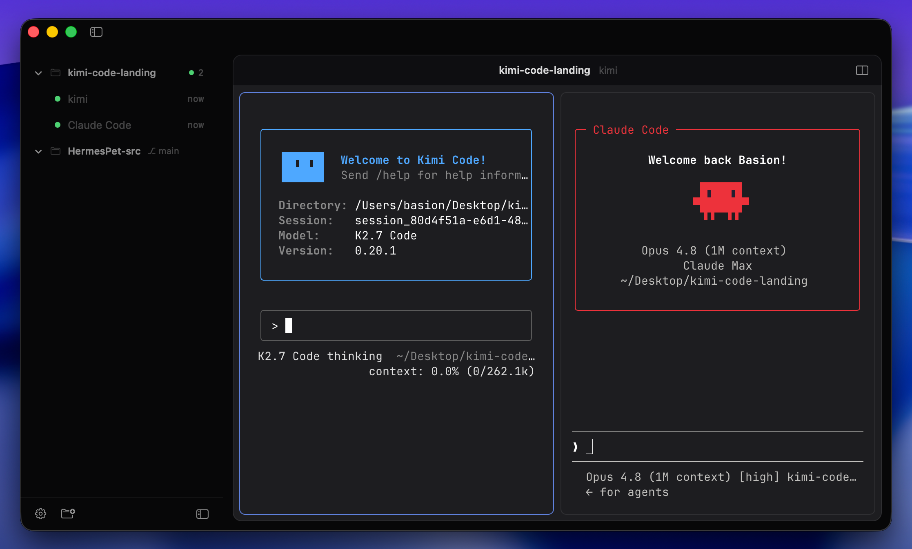
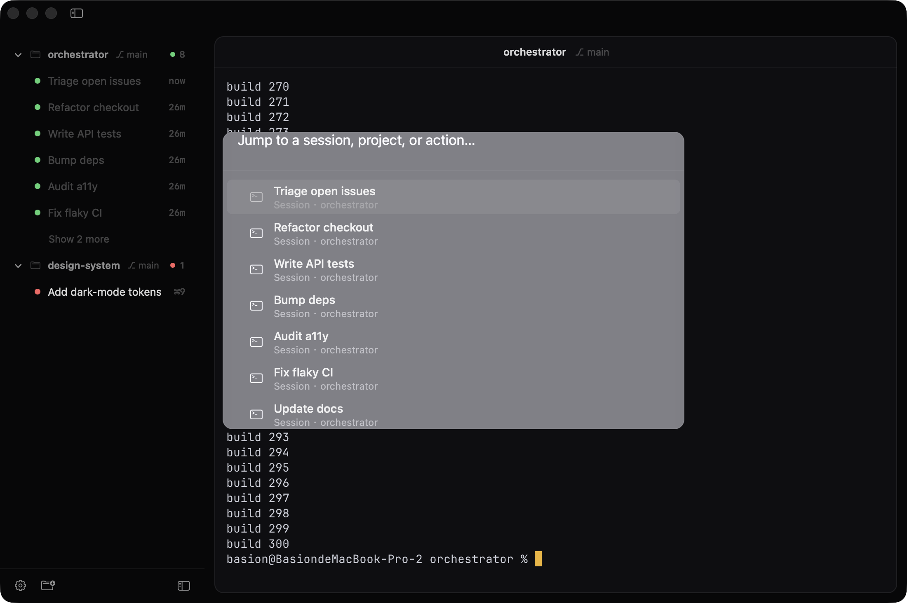
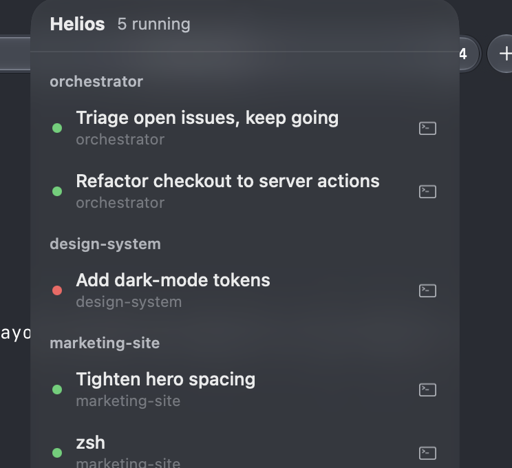
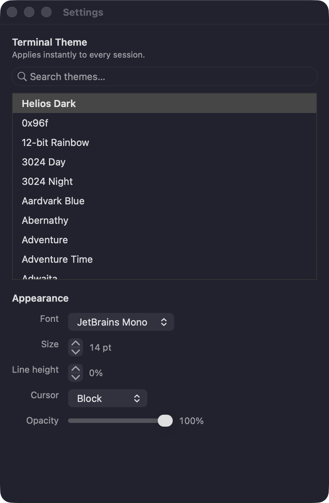

Run five agents at once without losing the thread. Sessions live outside the window, so quitting never kills them — and the sidebar reads like a dashboard. Native Swift, powered by libghostty.
Free · no account · no telemetry · ~8 MB · macOS 13 (Ventura) or later

Not a chat wrapper. A real terminal with a dashboard wrapped around it.
Every session runs in a launchd-backed daemon, not the window. Quit it, crash it, relaunch it — your agents keep working. The daemon writes each conversation to disk and replays it on the next start, so even a hard kill or a reboot brings your transcripts back.
One colored dot tells you the state of every agent — no reading logs to know what's happening.
Watch up to four sessions side by side in one window (⌘D).
Projects stay pinned with their git branch and a roll-up of running agents.
Spin up a git worktree and a session in it, so agents share a repo on separate branches.
Launch Claude, Codex, Gemini and friends with the right command in one click.
A notification and a Dock badge when an agent needs your answer or finishes.
Press ⌘K to fuzzy-jump to any session, project, or action.
Switch themes live with instant preview — no restart. Plus font, line-height, cursor and opacity. The window chrome stays seamless with whatever you pick.
Helios ships a local Model Context Protocol server for session control. It gives any session a safe way to inspect and drive its siblings: read output, type a prompt, answer menus, even start and close whole sessions. That's how one orchestrator can run a fleet of agents while you stay out of the keystroke-by-keystroke loop.

Every session runs in its own hosted process, so it survives quitting the window. A menu-bar item keeps a live pulse on all of them — grouped by project, one click away. Pick one and Helios snaps the window back open, right to that session.

500+ built-in themes, switchable live with instant preview. Dial in the font, size, line-height, cursor style and window opacity — and the whole window chrome follows your theme so nothing looks bolted on.

The future of AI-assisted work isn't one model or one harness. It's many, working together.
Claude for deep reasoning. Codex for code. Fast local models for the cheap, private work. And whatever lands next. Each is brilliant at something different, and betting everything on one is a bet you'll lose.
Helios is the calm place that sits between them. Run every agent side by side, let Sessions MCP wire them together, and stop juggling windows and copy-pasting between tools. One terminal where every harness is a teammate — and they can actually talk to each other.
No account. No telemetry. No cloud. Just a fast native app.
Download Helios for MacSigned & notarized by Apple — just double-click to open.
Claude Code, Codex, Gemini, Amp, OpenCode, Cursor — and really any CLI. Each comes with one-tap presets and the right flags. Bring your own keys or logins; Helios just gives each tool a native home and orchestrates them.
Yes. Real Swift and AppKit, with a libghostty terminal rendered on the GPU. No web view, no Chromium, so it stays fast and light on your battery and RAM.
Yes. The live terminal runs in a separate launchd-backed session host (the heliosd daemon) that owns the real terminal, while the app window is just an attachable client. Close or restart the app and Helios reconnects and replays the saved output. The daemon also persists each transcript to disk, so your conversation comes back even after a hard kill or a reboot.
A local Model Context Protocol server bundled with Helios that lets one session safely inspect and drive its siblings — read output, send a prompt, answer menus, start or close sessions. It's how a single orchestrator agent can run a whole fleet. Scoped to your current project by default, and can be turned off entirely.
Because the terminal is where these agents actually live. Every provider ships their best work as a CLI and improves it constantly. Wrap a custom chat UI on top and you build a lowest-common-denominator layer that's always a step behind. Helios gives each CLI a first-class native home instead — plus the dashboard, auto-titling and one-tap launching around it.
No — Helios is free. It will never add cloud services, accounts or telemetry. You bring your own agent keys and run everything locally on your Mac.